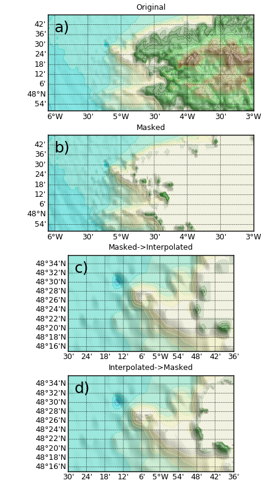

1.3.4.2.2.1. Les bases d’une bathy grillée¶
Voir : GriddedBathy plot_bathy() GSHHS map() regrid2d() polygon_mask()

En a), topographie original ; en b), la même topographie, mais masquée sur la terre grâce au trait de côte GSHHS fin ; en c), topographie masquée puis interpolée sur une grille plus fine ; en d), la topographie non masquée est d’abord interpolée, puis elle est masquée à l’aide du traît de côte. Cette dernière méthode évite d’interpoler un masque grossier et est donc préférable.
# -*- coding: utf8 -*-
import pylab as P
# Récupération d'une bathy sous la forme d'une variable cdat
import cdms2
cdms2.axis.latitude_aliases.append('y')
cdms2.axis.longitude_aliases.append('x')
from vacumm.config import data_sample
f = cdms2.open(data_sample('ETOPO2v2g_flt.grd'))
var = f('z', lon=(-6.1, -3), lat=(47.8, 48.8))
f.close()
# Création de l'objet de bathy grillee
from vacumm.bathy.bathy import GriddedBathy
bathy = GriddedBathy(var)
# On définit le traît de côte pour le masquage
bathy.set_shoreline('f')
# On récupère une version masquée
bathy_orig = bathy.bathy(mask=False)
bathy_masked = bathy.bathy(mask=True)
# Definition d'une grille zoom
from vacumm.misc.grid import create_grid
new_grid = create_grid((-5.5, -4.6, 0.009), (48.25, 48.6, .006))
# On interpole la bathy masquée sur une autre grille
interp_bathy_masked = bathy.regrid(new_grid)
# On interpole et masque la bathy originale sur une autre grille
# - interpolation
interp_bathy_orig = bathy.regrid(new_grid, mask=False)
# - masquage
interp_bathy_orig_masked = GriddedBathy(interp_bathy_orig, shoreline='f').bathy()
# Plots
from matplotlib import rc ; rc('font', size=9);rc('axes', titlesize=9)
kwplot = dict(resolution=None, show=False, colorbar=False, contour=False,
top=.97, hspace=.25, bottom=.03, right=.98,
autoresize=False, vmax=bathy_orig.max(), vmin=bathy_orig.min())
# - colormap
from vacumm.misc.color import auto_cmap_topo, land
kwplot['cmap'] = auto_cmap_topo(bathy_orig)
kwplot['bgcolor'] = land
# - directs
bathy.plot(title='Original', mask=False, figsize=(4.5, 8), subplot=411, key=1, **kwplot)
bathy.plot(title='Masked', mask=True, subplot=412, key=2, **kwplot)
# - indirect (bathy regrillées)
from vacumm.bathy.bathy import plot_bathy
plot_bathy(interp_bathy_masked, title='Masked->Interpolated', subplot=413, key=3, **kwplot)
plot_bathy(interp_bathy_orig_masked, title='Interpolated->Masked', subplot=414, key=4, **kwplot)
# - sauvegarde
from vacumm.misc.plot import savefigs
savefigs(__file__)
P.close()